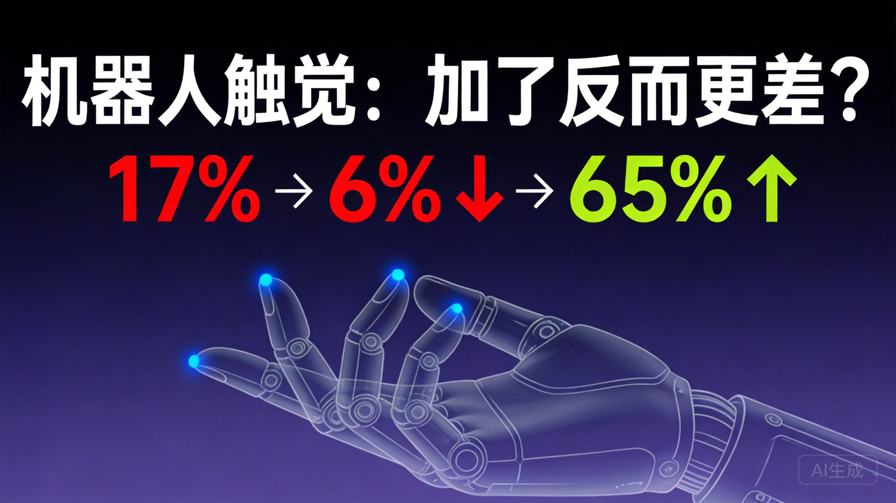

2026年6月，一份集结了26位顶级研究者的论文摆上了arXiv的桌面。李飞飞、Jim Fan、Pieter Abbeel、Jitendra Malik、Ken Goldberg、Trevor Darrell……这些名字随便拎一个出来，都是机器人或AI领域的重量级人物。
他们做了一件看起来很合理的事：在当前最先进的机器人基础模型π0.5上，注入触觉信号token，让机器人"既能看又能摸"。逻辑没毛病对吧？视觉给机器人全局感知，触觉给它精细反馈，1+1应该大于2。
实验结果：任务成功率从17%掉到了6%。
不是微降，是断崖式下跌。加了触觉之后，机器人反而更不会干活了。
这个实验打脸的不是"触觉有用"这件事，而是整个行业默认的工程假设——把视觉和触觉信号塞进同一个Transformer，用同一个时钟频率处理。
问题来了：视觉信号本质上是什么？摄像头拍一帧画面，模型推理一次，这个过程大概5Hz，也就是每秒处理5次。但触觉信号呢？力传感器每秒钟要采样几十甚至上百次，需要20Hz以上才能捕捉到关键的接触细节。
让一个马拉松选手和一个百米飞人用同样的速度跑。对马拉松选手来说太快了，跟不上；对飞人来说太慢了，节奏全乱。两个人互相拖累，谁都跑不好。这就是硬塞一个Transformer里发生的事。
Transformer的注意力机制在处理这些不同频率的信号时，低频的视觉信号会"稀释"高频的触觉信号，而高频触觉信号又会给视觉推理引入噪声。两边互相干扰，结果就是模型什么信号都没处理好。
这不是数据量的问题，也不是模型参数的问题。这是架构层面的根本性错配。
T-Rex的核心设计思路其实很直白：既然不同模态有不同的时间节奏，那就别硬揉在一起，给它们各自配一个独立运行的专家网络。
论文提出了Mixture-of-Transformers（MoT）架构，三个专家各管一摊：
| 专家 | 频率 | 职责 |
|---|---|---|
| 潜在专家（Latent） | 低频 | 处理视觉+语言，预测场景变化——"理解世界在发生什么" |
| 动作专家（Action） | ~5Hz | 运动轨迹生成，跟随视觉节奏——"决定手往哪走" |
| 触觉专家（Tactile） | 20Hz+ | 高频精细修正，毫秒级力反馈——"最后一毫米的校准" |
这套架构的巧妙之处在于，三个专家不是割裂的。潜在专家先理解"现在场景里在发生什么"，把信息传递给动作专家去规划运动轨迹，触觉专家则在动作执行的过程中做毫秒级的微调。就像工厂里的流水线——有人负责看图纸，有人负责操作机器，有人负责在最后关头做质检。各有各的速度，但信息是串联的。
时空触觉编码器（VQ-VAE模块）：把连续的时序力/触觉数据压缩成离散的"触觉词汇"。类似于语音识别把声波变成文字token——模型终于可以用处理语言的方式来处理触觉了。
预训练基础：22,889小时人类第一视角视频。模型先通过大量人类操作视频"看会"了怎么做各种动作，再在触觉数据上精调。
| 指标 | 数值 | 说明 |
|---|---|---|
| 直接注入触觉token | 6% | π0.5基线17%→6%，断崖下跌 |
| T-Rex MoT架构 | 65% | 平均任务成功率 |
| vs 纯视觉基线 | +30pp | 纯视觉35%→T-Rex 65% |
65%是什么概念？论文选了12项极其刁钻的测试任务，这些任务不是简单的抓取和放置，而是对精细操作要求极高的场景：
翻书页——你需要精确控制指尖力度，太轻翻不动，太重撕破了。转移生鸡蛋——稍有磕碰就碎。化学滴定——液面变化需要极精细的手部调控。这些任务的共同点是：纯靠视觉根本做不到，必须依赖触觉反馈来做毫秒级的力调节。
| 数据类型 | 规模 |
|---|---|
| 触觉同步操作数据集 | 100小时 |
| 覆盖物品 | 200+种 |
| 动作基元类型 | 22种 |
| 操作轨迹总数 | 7,700+条 |
| 人类视频预训练 | 22,889小时 |
这组数据也说明了一件事：触觉数据收集的成本是真实存在的。100小时的同步采集数据，背后需要专门的硬件setups、精心设计的实验协议、大量的标注和清洗。这不是随便拍拍视频就能搞定的。
这篇论文对触觉传感器产业链传递了一个重要信号：硬件本身的进步是不够的，软件侧的架构必须跟上。
过去两年，灵巧手触觉传感器的融资和产品发布密度明显上升。各家都在卷采样率、分辨率、量程。T-Rex的实验证明，即便你有一个性能不错的触觉传感器，如果下游的AI模型架构没法在正确的频率上消费这些数据，传感器性能再好也发挥不出来。
换句话说，触觉传感器公司和AI模型公司之间出现了一个架构对接的gap。传感器厂商在追求更高的采样率和更密的传感点阵列，但模型端还在用5Hz的管道去接收20Hz以上的数据流。这个gap不解决，硬件端的投入会大打折扣。
产业链启示：触觉传感器的价值释放，取决于AI模型架构能否正确消费高频触觉数据。MoT这类多频率专家架构，可能成为释放触觉硬件价值的关键"翻译层"。
值得关注的是，论文后续的工作正在加速推进。TouchWorld（arXiv 2607.07287）提出了预测式和反应式结合的触觉基础模型框架；TacReasoner（arXiv 2607.05131，已被IROS 2026接收）进一步探索了动态触觉-语言推理。这个方向的论文密度正在快速上升，说明社区已经意识到了频率错配的问题并开始系统性地解决它。
第一篇聊了触觉传感器硬件端的技术路线和竞争格局——哪些方案在跑、谁领先、差距在哪。
第二篇分析了触觉数据的采集成本和商业化路径——100小时数据背后的故事。
这一篇是终章：当硬件和数据都就位之后，AI模型层应该怎么接住这些数据？T-Rex给出了一个方向——别再硬塞，让不同频率的信号各走各的通道。
三部曲的结论是统一的：触觉感知的价值链正在形成，但每一层都有各自的瓶颈要突破。